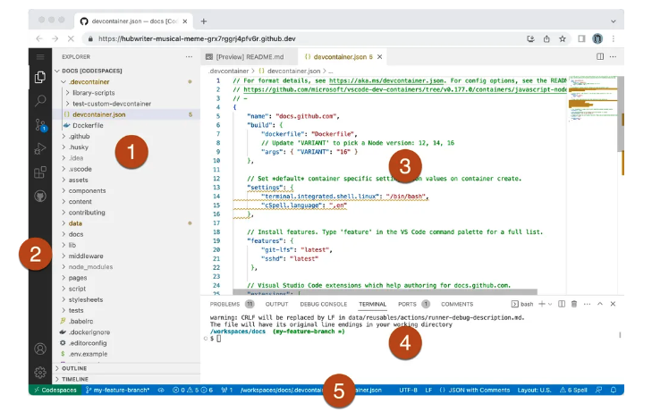
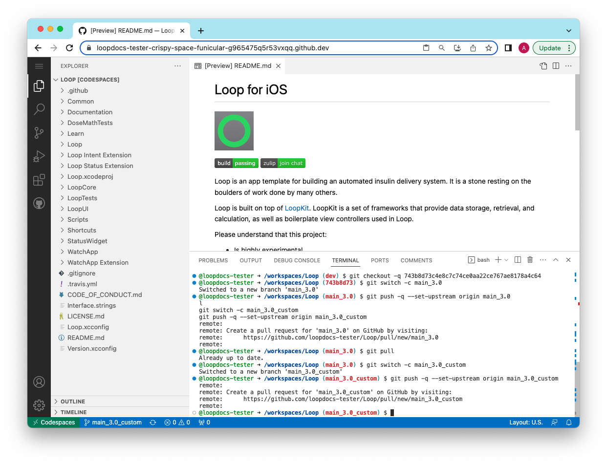
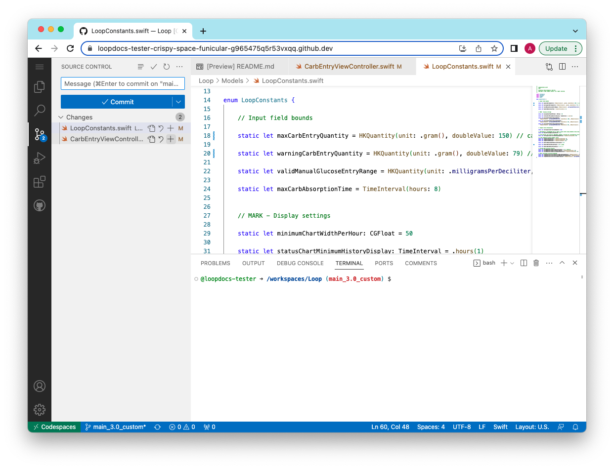

Customize with GitHub
Hot Topics¶
Pro Tip
You can also use this same method to create a set of personal patches. You can use (and re-use) your patches with Mac-Xcode builds so you don't have to repeat the customization with every update.
- If you are building with Mac-Xcode method, you will use the same lines found in the Prepare the Patches section, but will paste them in your terminal to customize your code
DRAFT
This procedure is in DRAFT mode - only minimal graphics are provided.
The entire procedure may change without warning, so be prepared for updates.
- 27-March 2023: Method updated and modified
- Improvement, you can reuse the customization with each update unless there is a conflict
- You will paste the patch into the build_loop.yml file (we'll tell you how)
WARNING - After a recent release - wait for the release number to be updated on this page before using any of the copy/paste commands.
This page was updated for Loop 3.2.1 on 22-March-2023.
Overview¶
Time Estimate
- About half an hour to an hour per Module
- Typically 1 or 2 Modules
- Ten minutes to add patch lines to your build_loop.yml file
- One minute to start the build
- An hour before the TestFlight build shows up on your phone
Summary
- Prepare Patches (One Time):
- Once you have prepared the patches, you can use them again with each update
- If there is an update (new release) and the patches "no longer apply" - you will get a clear error message
- Just follow the steps on this page again to replace the patch that did not work
- If there is an update (new release) and the patches apply with no errors, then you do NOT need to create new patches
- LoopDocs: Decide on Modules to modify Code Customization
- GitHub (each Module):
- Fork Module (GitHub)
- Modify Module (GitHub to Codespaces)
- Finish your customizations (Codespaces to GitHub)
- Prepare lines needed for each patch and save
- GitHub (LoopWorkspace)
- You will use the GitHub pencil tool to edit build_loop.yml in your fork
- Add patch lines to the file
- Save (commit) your changes
- Action: Build Loop
- Phone: Install Loop with TestFlight
FAQs
- Do I need a Mac computer? No. This can be done on any browser, although it will be easier using a computer.
- Should I build without customizations first? Yes. Make sure the build process works without customizations. You don't need to install the build on your phone, just make sure it builds without errors before you start modifying.
How to Customize a GitHub Build¶
You do not need a Mac, you can still do this using any browser on a computer.
There is some background information at the bottom of this page starting at LoopWorkspace if you want to know what you are doing. Otherwise, just follow the steps like a cookbook.
Editing Code¶
You will be using the online tool associated with GitHub called Codespaces. Any repository in your GitHub account can be opened with Codespaces.
You will need a text editor to format a "patch" line for each module you change. Use the same text editor you use for saving your Secrets. You do not want characters like double hypen or quote symbols modified by a smart editor.
Decide Which Modules You Want to Modify¶
Decide which Code Customization you want to make. Each customization lists a Module name. You will want a fork for each Module you wish to modify.
- DASH Pods: Use OmniBLE
- Eros Pods: Use OmniKit
This table lists all the modules referred to on the Code Customization page linked above:
| Module | Fork From |
|---|---|
| Loop | https://github.com/LoopKit/Loop |
| LoopKit | https://github.com/LoopKit/LoopKit |
| OmniBLE | https://github.com/LoopKit/OmniBLE |
| OmniKit | https://github.com/LoopKit/OmniKit |
Pro Tip
Open 4 browser tabs or windows so you can click to switch locations.
- This page
- LoopDocs: Code Customization
- Your GitHub account
- A new one that you'll use to open Codespaces
Outline of What Happens in the Module¶
Review Only
Review this section so you know what to expect. The actual steps will come later.
In the next sections, the exact process for making changes will be documented. But the steps may feel confusing. This section tries to explain what you will be doing once you start editing (using Codespaces) with a given Module.
- Prepare your Module so it is at the correct version
- Change the line(s) of code desired for your customization(s)
- Commit (save) the change(s) using descriptive comments
- Repeat until done with this Module
Once you are finished with the customizations for this Module, you will save lines that you will paste into the build_loop.yml file.
You will be creating instructions to apply the "patches" in a text file (suggestion - use same file as Secrets). For each customization:
- Insert a comment or description line (starts with a #)
- Insert the "patch" line (start with
curl)
# Module: File: code customization description
curl https://github.com/username/Module/commit/SHA-1.patch | git apply -v --directory=Module
where:
- username is your GitHub username
- Module is where you made the customization (notice it is in multiple places)
- SHA-1 is the full identifier for the commit that has the change; there is a copy button to make this easy
- the
.patchafter the SHA-1 is github magic that formats that code change into a patch
Create a Fork for Selected Module¶
New Release
If you have previously used this process for a prior release, use the same Modules you already forked.
You can often reuse patches that you created earlier even with a new release. Attempt to use your existing patches before creating new ones.
If those patches did not work, then
- Go to the branch for each Module (dev or main) that is the default branch in the table above.
- Sync that branch
- For the Loop Module, you'll need the main branch as well as the dev branch
Skip ahead to Open Module in Codespaces.
If you want a modification that uses a particular module, you must fork that module to your GitHub account. You will repeat the Fork and Modify steps for each module.
- Log into your GitHub account
- Right click (or control click) on the URL in the table above
- This opens a new browser tab at the URL of the repository you need to fork
- Tap on Fork, your fork will show up in the tab
Remember - you can only have a single fork of a given repository. If you already have a fork, you don't need another one; but it must be a fork from the URL listed above.
I already have a fork
Go to Existing Fork for Module and follow the directions there.
When you fork a repository, the default branch is the one that is forked. That is ok. Only include that default branch when forking.
| username/Repository | Default Branch | Required Branch |
|---|---|---|
| LoopKit/Loop | dev | main |
| LoopKit/LoopKit | dev | dev |
| LoopKit/OmniBLE | dev | dev |
| LoopKit/OmniKit | main | main |
- WARNING - After a recent release
- Your existing patches will probably still work
- If they give an error when building, or if you want to add another customization, then . . .
- Wait for the release number to be updated on this page before using any of the copy/paste commands
- Check the top of this page for the release message
- Your existing patches will probably still work
Pro Tip
If you know you want to change more than one Module, go on and prepare the forks for each Modules you want to customize.
This page has instructions for applying customizations to released code, main branch of LoopWorkspace. Don't worry that some of the other repositories have dev for the default branch. With the exception of the Loop module, everything you need to create your patches is included in the default branches of the lower level repositories (Modules). For Loop, you will also need a main branch. See Connect Fork to New Branch
Loop with LnL Patches
Some Loop users build with the loopnlearn version of LoopWorkspace using the main_lnl_patches branch. At the current time, this process involves making your LoopWorkspace fork from loopnlearn instead of LoopKit. In the future, you will be able to get the same patches by a different method.
The process for creating your own customized patch is the same as those using the released code. There will be extra information about modifying the build_loop.yml depending on which LoopWorkspace you choose to fork (LoopKit or loopnlearn). But that documentation is not ready yet.
Open Module in Codespaces¶
New Release
If you have previously used this process for a prior release, use the same Modules you already forked. Make sure you sync each Module to LoopKit.
You can often reuse patches with a new release. Test first before bothering to create a new patch for a customization you have previously configured.
You need to repeat this section to create the main_3.2.1 branches for each Module you want to customize.
Now that the selected module fork exists in your GitHub account, you will open it in Codespaces.
- If you are returning to change a customization you've already made to version 3.2.1, be sure to select the branch where you already made the previous customization; Update Customization
- If you are returning to add customization to an updated version of Loop, you must complete this section
For this portion of the process, work with a single Module until you are done with the customization for that module. Repeat this for all Modules and then move on to updating the build_loop.yml file in your fork for LoopWorkspace.
Pro Tip
The more modular you make your commits, the more likely that the patch will still work after updates.
For example, make a change to modify Future Carbs Time Interval and commit that change with that message. That single change is used to create a patch that you can label change future carb limit to 4 hours in both the commit message and your patch commands you save in your text file.
If you prefer, you can change all the files in one Module and make one big commit. You'll have fewer lines to add to build_loop.yml, but this patch is more likely to fail in future updates.
- Right click (or control click) on Codespaces
- This opens a new tab in your browser
- Click on the green button on the right that says
New Codespace
- On new screen
- Click on Select a repository and choose your GitHub username/moduleName for the module you want to modify (you can start typing your username if there are too many choices)
- You will see a message the
Codespace usage for this repository is paid for by username- you get 60 free hours per month, so you can ignore this message- First time - main for Loop or OmniKit; dev for LoopKit or OmniBLE
- Subsequent times - select your customized branch, e.g., main_3.2.1_custom
- You do not need to modify the region or machine type
- Click on the green button at the bottom that says
Create codespace
- A message appears saying setting up your codespace; and then the Codespaces screen appears showing the README.md file (by default) for that repository
-
Your screen will be similar to that shown below

- Note:
- That image shown above is from GitHub Docs: Working in a codespace in the browser
- You can click on that link for more information if desired, or just follow instructions below.
- There are 5 sections of the display labeled with numbers inside red circles
- Note:
If you have already made a customization in this module and you are returning for another modification, skip to Customize the Module.
Codespace Terminal¶
- The terminal window should be showing in the panel section (indicated by the number 4)
- You should see::
@username -> /workspaces/moduleName (branch) $- where your username is after the @ symbol
- and the current Module replaces moduleName
- the branch is the default branch for this Module (dev or main)
- this is where you will paste the command you're about to copy
The commands you paste depend on whether this is the first time you've worked with the Module for release 3.2.1 or if you have already started customizing it and thus already have a main_3.2.1_custom branch created.
First Time for this Module¶
These commands are used ONLY for released version of Loop and only the first time you work with a given Module for release 3.2.1. This page is configured for released version 3.2.1.
This process has two steps:
- Step 1: Copy the indicated first command (Prepare xxx Module) and paste into the terminal window
- When you try to paste - it will ask if you want to allow or block input
- Allow the paste
- Check for an error - do not continue if you see an error
- Step 2: If no error was seen, follow the instructions in Create New Branch
After these two steps are completed, then you will continue to Customize the Module.
Alerts
- Skip ahead to Update Customization if you have already made modifications
- Do not use if you built the LnL Patched Version of Loop
- After you paste the Prepare xxx Module command (below), STOP if you get an error
- If you do not get an error, continue to Create New Branch which is the same for all modules.
Copy the selected line for the current module into the terminal. If you see an error STOP.
- Did you copy the correct line for the current Module?
- Did you select the correct branch for this Module?
- Is your Module branch (dev or main) up to date?
Prepare Loop Module (Loop 3.2.1)¶
git checkout -q 01eb87693ffb832aa8fb92692438a986ec7270e9
Prepare LoopKit Module (Loop 3.2.1)¶
git checkout -q 9835a29f1bac9f75023f39c376479a2e6a6c8ccd
Prepare OmniBLE Module (Loop 3.2.1)¶
(DASH)
git checkout -q f21360781c0b8eee26c531d20f1b0aa192a227f2
Prepare OmniKit Module (Loop 3.2.1)¶
(Eros)
git checkout -q c1e0d395975c93d15b3f84ac21097e40b7d5d93f
Create the Custom Branch¶
Copy and paste the next command to create a special branch in your fork that matches the released code for this Module.
git switch -c main_3.2.1
You should see the response: Switched to a new branch 'main_3.2.1'
Assuming no error, copy and paste these commands next. You will see a popup asking you if you want to paste multiple lines. Say yes and check the box to not ask again.
git push -q --set-upstream origin main_3.2.1
git pull
git switch -c main_3.2.1_custom
git push -q --set-upstream origin main_3.2.1_custom
You should see the items you pasted in the terminal followed by responses talking about the remote (your GitHub repository) and how to create a pull request; that you are already up to date; that you switched to a new branch and then another remote message. Your screen should be similar to the graphic below. (Note: this graphic was prepared for Loop 3.0.0. Now that Loop 3.2.1 is released, your terminal will show the SHA-1 for Loop 3.2.1.)

What did those steps accomplish?
You now have 3 branches in your Codespace (local) and your GitHub (remote) versions of your repository for this Module:
- dev or main (depending on Module)
- main_3.2.1
- main_3.2.1_custom
Right now main_3.2.1 and main_3.2.1_custom are identical and match the released copy for that Module.
Next step, you will modify main_3.2.1_custom.
Skip ahead to Customize the Module and make the changes to this branch that you want for your Module.
Update Customization¶
If you are returning to change a customization you've already made, follow these directions.
- Right click (or control click) on Codespaces
- This opens a new tab in your browser
- Click on the Codespace tab at the top center
- If your Codespace for this Module already exists (list at bottom of browser window), you just need to open it (click on 3 dots and choose open in browser)
- If your Codespace for this Module does not exist:
- Click on the green button on the right that says
New Codespace - Click on Select a repository and choose your GitHub username/moduleName for the Module you want to modify
- Select your customized branch, e.g., main_3.2.1_custom
- You do not need to modify the region or machine type
- Click on the green button at the bottom that says
Create codespace
- Click on the green button on the right that says
- A message appears saying setting up your codespace; and then the Codespaces screen appears showing the README.md file (by default) for that repository
- In the terminal window, you should see the line:
@username -> /workspaces/moduleName (main_3.2.1_custom) $
Continue with Customize the Module.
Customize the Module¶
You will be using the Code Customization page. Best to open that in a separate browser window so you can go back and forth.
For each modification, there is a Key_Phrase to help you find the line of code.
Click on the codespaces magnifying glass, paste the Key_Phrase into the search bar. If you use the copy icon and paste the Key_Phrase, you'll need to hit backspace to remove the extra return.
TO DO - put in a GIF showing making changes.
Make the change and save the file.
The source control icon now has a number showing. The number is how many different files in this Module that you have modified. Sometimes, more than one customization is added to a given file.
This "cookbook" has you commit each file that you modify as a separate commit. You then wind up with a patch line for each file you changed. The patches are more likely to be accepted with newer releases if they are single files at a time.
The graphic below shows 2 files ready to commit:

When you are done with the changes for this Module, for each file you modified:
- Stage the modified file
- Tap the + icon to right of a file
- Add a commit message describing what that change is
- Recommended syntax: Filename: customization description
- Commit the change (to your local copy in Codespaces)
- Sync the change (to your GitHub fork)
- You will see a warning
This action will pull and push commits from and to "origin/main_3.2.1_custom". - Select `OK, don't show again'
- If you see message:
Do you want to periodically run git fetch- say No
- You will see a warning
Repeat the process for each file.
You are done with this module.
Click the Codespaces icon at bottom left. Choose Stop Codespace from the menu. Don't worry about the changes won't be saved message - you just saved the changes with the sync command above.
The screen will then show the Codespace is stopped message. You can close the tab.
Return to your github account and look at the repository for the Module you just changed. It should be similar to the graphic below.

Prepare the Patches¶
While you have this Module open, go on an prepare the patch lines you will need to add to the build_loop.yml file.
Add graphic showing several customizations with comments.
Important: work from older (bottom) to newer (top) commits when creating the patches.
- If you grouped all changes to a given file into one commit, the order won't matter
- If you applied another change to the same file, the order is important, the older commit should always come first in the list of patches
For each commit that has a customization you want to include, create a pair of patch lines consisting of the comment (must start with a #) followed by the curl statement pointing to the commit that has the customization.
Save the patch lines in your text file for later use in the build_loop.yml file.
# Module: File: code customization description
curl https://github.com/username/Module/commit/SHA-1.patch | git apply -v --directory=Module
where:
- username is your GitHub username
- Module is where you made the customization (notice it is in multiple places)
- SHA-1 is the full identifier for the commit that has the change; there is a copy button to make this easy
- the
.patchafter the SHA-1 is github magic that formats that code change into a patch
Move on to the next module, repeating all these steps from Open Module in Codespaces through prepare the patches.
Update LoopWorkspace¶
The final step is to update your LoopWorkspace fork to apply these patches by adding those patch lines into the build_loop.yml file.
Return to your GitHub fork for LoopWorkspace and make sure to sync it if needed.
- Find the folder .github/workflows and click on it
- Find the file build_loop.yml and click on it
- Tap on the pencil (so you can edit this file)
- Locate line 31, which is just above the words:
# Patch Fastlane Match to not print tables
- Paste the contents of the block below so it comes before that section
# Customize Loop: Download and apply patches
- name: Customize Loop
run: |
# For each patch, edit comment line (keep the #) then update curl (and remove the #)
# Submodule Loop patches:
# Loop: Filename: customization details
#curl https://github.com/username/Loop/commit/SHA-1.patch | git apply -v --directory=Loop
# Submodule LoopKit patches:
# LoopKit: Filename: customization details
#curl https://github.com/username/LoopKit/commit/SHA-1.patch | git apply -v --directory=LoopKit
# Submodule xxxxx patches: Follow prototype above
Open the text file in which you saved the comment / curl pairs.
For a given submodule, paste the comment / curl pairs as indicated in the template above.
The indenting needs to match, so tab or (shift-tab) to line up the patches.
Build Loop¶
- Click on Action: Build Loop
- Click on Run workflow on the right side
- Then click on the green Run Workflow button
In about 1 hour, your customized Loop will be available for installation on your phone via TestFlight.
Special Cases¶
Existing Fork for Module¶
What if you already have a fork of one of the modules?
Situation 1¶
Your fork is from using this page earlier and you already have a main_#.#_custom branch
- Option A: You want to add a new customization to your existing main_#.#_custom branch
- Go to Update Customization
- Option B: You want to throw away your existing main_#.#_custom branch and start over
- Follow the GitHub Instructions to delete a branch
- Click on Code, make sure you are at the correct branch and sync the fork
- Go to Open Module in Codespaces
Situation 2¶
Your existing fork is from the correct location (LoopKit)
- Option A: Your existing fork shows the dev branch as the default branch
- Tap on sync fork
- Go to Open Module in Codespaces
- Option B: You probably know what to do or this would not be your situation - ask for help if you are confused
Situation 3¶
Your existing fork is from a username other than LoopKit
If your fork is from loopnlearn then you need to follow the directions (that are not written yet) on the loopandlearn dot org website.
If you know this is a fork you do not care about, you can delete the repository.
- Instructions to delete a repository are found at GitHub Docs
Once deleted, go to Create a Fork for Selected Module.
Background Information¶
LoopWorkspace¶
The LoopWorkspace repository is the umbrella organization holding all the pieces needed to build the Loop app. Part of what LoopWorkspace provides is a list of pointers to a specific commit for each module used in the workspace.
- A commit is a specific version of code in a repository
- A workspace is a grouping of several repositories (modules) into a complete package
- The workspace includes a list of the specific commit for each repository (module)
The steps given earlier on this page modifies the commit for the module that you change used by LoopWorkspace when it builds.
- A commit to a module can be made without affecting the workspace
- To update the workspace to use the new commit for a module, the list containing the specific commit for that repository (module) must also be updated
- This update is itself a commit to the workspace repository
This allows a given module, say Loop, to be updated with a new commit; but that commit doesn't affect the Loop app that you build using LoopWorkspace. Once you change the LoopWorkspace to point to the new commit in Loop, then the Loop app you build
What are branches again?¶
Branches indicate different version of code - this tutorial is pretty nice.
- The history required for the main branch (released code) is also present in the dev branch for the submodules
- The commands listed earlier on this page are to assist you in creating your own branch and you will customize that branch
- If you later want to modify your customization, start with the branch you already created and edit it